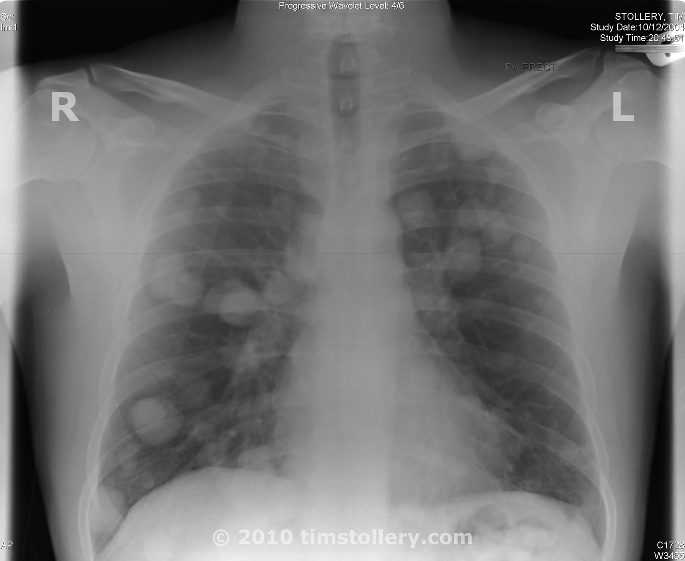

Mi historial de tratamiento
Pruebas de imagen y resultados
Radiografías tomadas antes y durante la quimioterapia.
Las cuatro radiografías siguientes se tomaron antes y durante mi quimioterapia. Las posteriores han salido limpias, salvo pequeñas cicatrices donde estaban los tumores metastásicos o secundarios.
